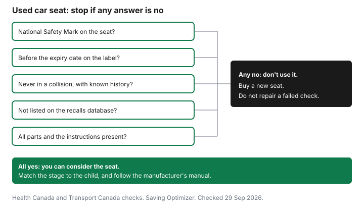

Kids · Canada
Secondhand Kids' Gear That's Still Safe: Car Seats, Cribs, Helmets and What to Buy New
A secondhand car seat or crib can save a large bill, and it can also be a product Health Canada says not to use. The useful habit is a short list of checks from the federal pages, done before you pay or before you accept a hand-me-down. This guide is that list: car seats and boosters, cribs, strollers and playpens, helmets, and a recall search. It is not medical advice, and it does not name a product to buy.
Key takeaways
- Health Canada says not to use a second-hand car seat or booster if the seller does not know its history. It needs a National Safety Mark, the parts in the manual, and it must not have been in a collision.
- Transport Canada says an expiry date is not required by regulation, and that most seats have one. Follow the manufacturer's date. A seat made before 1 January 2012 may be illegal to advertise, sell, or give away.
- Do not use a crib made before September 1986. Traditional drop-side cribs cannot be sold, imported, manufactured, or advertised. Check a used crib, or one more than 10 years old, for damaged parts.
- Health Canada does not recommend buying a bicycle helmet second-hand. An ice hockey helmet needs a CSA sticker, and should not be bought after a major impact, past five years, or with missing parts.
- Search recalls-rappels.canada.ca before you pay. If a check fails, do not use the item.
Car seats: National Safety Mark, expiry dates, collisions and recalls
Health Canada's second-hand car seat page, page details 10 December 2024, says some second-hand seats and boosters may not be safe to buy or borrow. Do not use a car seat or booster if the seller or lender does not know the history of the seat.
When you are considering one, the page says to make sure it has a National Safety Mark, which is proof the seat meets Canadian safety standards. It needs the manual, or you contact the manufacturer for the manual, and every part listed in the manual, in working order. It must not have been in a vehicle during a collision. For a car seat, the page also says to check that the buckle latches and unlatches, the harness tightens and loosens, the chest clip closes and stays closed, and the anchoring system works.
Expiry dates, the same page says, are indicated on most car seats and booster seats even though the law does not require them. Questions about a specific date go to the manufacturer. Transport Canada's expiry page says the same thing from the regulator's side: although not required by regulation, most if not all seats sold in Canada have an expiry date or useful life date. Look for a label on the seat or in the manual, and follow the manufacturer's instructions and warnings. Transport Canada also says that if a seat was made before 1 January 2012, it may be illegal to advertise, sell, or give it away because it may not meet the latest safety standards. Health Canada's second-hand shopper sheet adds that you should not buy a seat without a National Safety Mark, that you should not buy one that has been in a collision, and that the seat should come with warnings, use guidelines, installation instructions, and a date of manufacture. Rear-facing and forward-facing seats match different stages. Buy the stage the child is in now.
Search the recalls database before you pay. If any box in the chart is a no, the outcome is the same: do not use it, and buy a new seat that has the mark, the manual, and a date you can read. The household used-goods guide is the general secondhand habit. Car seats are the exception that page should send you back here for.

Cribs: pre-1986 cribs and drop-side cribs, and the 10-year guidance
Health Canada's safe-sleep page on cribs, cradles, and bassinets says cribs made before September 1986 should not be used. They do not meet current rules such as slat spacing, and a baby's head can be trapped. As of 29 December 2016, it is illegal to sell, import, manufacture, or advertise traditional drop-side cribs in Canada. The page says drop-side cribs are not safe and have been linked to injuries and deaths.
A crib passed down from family is the case the page warns about. If you buy a used crib, cradle, or bassinet, or it is more than 10 years old, check for missing, loose, worn, broken, or damaged parts. Replace a worn or soft mattress. The page says a soft mattress can suffocate a baby, and a worn mattress can have sharp springs and loose threads. Wood and metal parts should have no loose nuts or bolts, no cracks or bent parts, and no splinters or sharp edges. It is not safe to modify the product or to repair it with parts from a hardware store. If the manufacturer cannot supply parts, the page says to dispose of the product so it is not used again. New and used cribs, cradles, and bassinets sold in Canada, including at garage sales and online, must meet the current regulations. Measure before you accept one: slats no more than 6 centimetres apart, corner posts no higher than 1.5 millimetres above the sides, and a mattress gap no bigger than 3 centimetres when the mattress is pushed to one side. Crib mattresses should be no thicker than 15 centimetres. Cradle and bassinet mattresses, no thicker than 3.8 centimetres. Search recalls before the baby sleeps there.
Strollers, high chairs and playpens: what to inspect
Health Canada's sheet for second-hand shoppers, page details 4 February 2021, is specific. Strollers and carriages made before 1985 may not meet current requirements and should not be purchased.
Ask when it was made. The product must identify the manufacturer, model, and date of manufacture. It needs a lap belt and crotch strap solidly attached, a working brake, working locks on a folding model, and wheels that stay on.
A playpen needs a label with the manufacturer, model, and date of manufacture, plus instructions. It must not have more than two wheels or casters, or a way to add more. Locks must work. Mesh should be fine, like mosquito netting, with no tears. Joints of metal tubing should be padded. Bolts should not protrude, and the ends should have tight acorn nuts. Straps or cords longer than 18 centimetres should not be attached. A high chair, on the same sheet, should be stable, with a wide base, no loose or missing parts, and a restraint of a crotch strap and a waist belt that fastens and is in good condition. Locks should work. The sheet says to purchase only high chairs meeting the latest ASTM F404 standard, and to ask before you buy. These are inspection points, not a ranking of brands.
Helmets and sports gear: why impact history matters
The same Health Canada sheet separates helmet types. Bicycle, in-line skating, and equestrian helmets are designed for a single impact.
Health Canada does not recommend that you buy these second-hand or borrow them. Ski and snowboard helmets may be single-impact or multiple-impact. If you are unsure which, the sheet says not to buy the helmet. Do not buy a second-hand single-impact helmet. A multiple-impact helmet, if you buy one, should show a label for a recognized standard.
Ice hockey helmets and face protectors sold in Canada must carry a sticker showing they meet a CSA standard, and the standard number. A face protector sold separately must have the mark, the hardware, and the installation instructions. A hockey helmet needs a date of manufacture and a working chin strap. The sheet says they usually last between three and five years depending on use, and that they should not be purchased if they took a major impact, are more than five years old, show damage, or are missing parts. Damage is not always visible. If you are unsure, do not buy it. After an impact, follow the manufacturer's replacement guidance. The minor-hockey budget, including what else to buy used, is on the hockey cost guide. Winter clothing is a different pile. The winter gear guide covers suits and boots, not helmets.
Checking Health Canada recalls before you pay
Search recalls-rappels.canada.ca with the brand and the model before money moves. Do it again for a gift you are about to accept.
The recalls home page was checked 29 September 2026. This guide does not cite one current recall as the example, because the right search is the product in front of you. A missing label is a reason to leave the item. Health Canada's shopper sheet also says used toys with sharp edges, loose eyes, or broken parts should not be bought, and that small parts are a choking hazard for children under 3. Toys are on the holiday gifts guide as well.
A buy-used / buy-new table
Use the row as a gate, not as a bargain score. "Buy new" here means do not rely on a used one when the federal page says not to. "Buy used only if" means every check in the row is a yes.
| Item | Used, new, or borrow | What to check (source) |
|---|---|---|
| Car seat | Used only if every check passes. Otherwise buy new. | National Safety Mark, manual and all parts, never in a collision, known history, not recalled. Expiry date from the manufacturer. Health Canada second-hand car seats. Transport Canada expiry page. Seat made before 1 January 2012: may be illegal to sell or give away. |
| Booster | Same gate as a car seat. | Health Canada groups boosters with car seats for the mark, the history, the collision, and the manual. Expiry on the label or in the manual. |
| Crib | Do not use a pre-September 1986 crib or a drop-side crib. A newer used crib only after the parts check. | Health Canada safe sleep: never before September 1986. Drop-side cribs cannot be sold. More than 10 years old: inspect parts, mattress, and do not repair with hardware-store parts. Slat, post, and mattress measures on that page. |
| Bassinet or cradle | Used only with the label, instructions, and a mattress that meets the measures. | Same safe-sleep page. Mattress no thicker than 3.8 centimetres. Gap no bigger than 3 centimetres. Recall search. |
| Stroller | Do not buy one made before 1985. Later used strollers only with the parts list. | Second-hand shopper sheet: manufacturer, model, date, lap belt and crotch strap, working brake and locks. |
| High chair | Used only if stable, complete, and restrained. | Wide base, crotch strap and waist belt, working locks, ASTM F404. Ask before you buy. |
| Playpen | Used only with the label and intact mesh. | Manufacturer, model, date, at most two wheels, working locks, fine mesh, no cords longer than 18 centimetres. |
| Bike helmet | Buy new. Health Canada does not recommend buying one second-hand or borrowing one. | Single-impact helmet. Second-hand shopper sheet. |
| Hockey helmet | Used only if you know the impact history and the age, and the sticker is there. If you are unsure, do not buy it. | CSA sticker and standard number, date of manufacture, working chin strap. Not after a major impact, not more than five years old, no missing parts. Damage is not always visible. |
| Toys | Used only if intact and age-right, after a recall search. | No sharp edges, no loose eyes or noses. Small parts away from children under 3. Check recalls, including for lead in paint on recalled toys. |
| Step | What you are looking for |
|---|---|
| Label and date | Manufacturer, model, and a date of manufacture you can read. For a car seat, the expiry or useful-life date on the label or in the manual. |
| Recall search | Brand and model at recalls-rappels.canada.ca. Do not use a recalled product. |
| National Safety Mark | On a car seat or booster. No mark, do not buy. |
| Crash or impact history | Car seat: never in a collision, and the seller knows the history. Helmet: no major impact, and you can see the condition. |
| All parts and the manual | Every part the manual lists, working. If the manual is missing, get it from the manufacturer before you decide. Do not repair a crib with hardware-store parts. |
When the item is finished with, the consignment guide is about clothes, not about passing on a car seat that has expired or been in a crash. A neighbourhood Buy Nothing group is a fine place for clothes and toys that pass the checks above. It is a poor place to skip the mark on a car seat. The kids' clothing budget stays on garments and the provincial rebate, which does not apply to a car seat.
Sources & date stamps
- Health Canada, second-hand car seat and booster seat safety, page details 10 December 2024, checked 29 Sep 2026. National Safety Mark, manual and parts, no collision, known history, buckle, harness, chest clip, anchors. Expiry indicated on most seats, not required by law.
- Transport Canada, expiry dates on child car seats and booster seats, checked 29 Sep 2026. Expiry not required by regulation. Follow the manufacturer. Seats made before 1 January 2012 may be illegal to advertise, sell, or give away.
- Health Canada, cribs, cradles and bassinets, checked 29 Sep 2026. No cribs made before September 1986. Drop-side cribs illegal to sell, import, manufacture, or advertise as of 29 December 2016. More than 10 years old: parts and mattress checks. Measures: 6 centimetres, 1.5 millimetres, 3 centimetres, 15 centimetres, 3.8 centimetres.
- Health Canada, information for shoppers of second-hand products, page details 4 February 2021, checked 29 Sep 2026. Strollers before 1985, playpens, high chairs and ASTM F404, bicycle helmets, hockey helmets and the three-to-five-year note, toys, magnets.
- Recalls and safety alerts, recalls-rappels.canada.ca, checked 29 Sep 2026. No specific recall cited.
Frequently asked questions
Is it safe to buy a used car seat in Canada?
Health Canada says not to use a second-hand car seat or booster if the seller does not know its history. It needs a National Safety Mark, the manual and all the parts, and it must not have been in a vehicle during a collision. Search recalls before you pay. If any check fails, do not use the seat.
Do car seats really expire?
Transport Canada says an expiry date is not required by regulation, and that most seats sold in Canada have one on a label or in the manual. Follow the date the manufacturer set. Do not use a seat past that date. A seat made before 1 January 2012 may be illegal to advertise, sell, or give away.
Can I use an old crib from family?
Health Canada says cribs made before September 1986 should not be used. Traditional drop-side cribs cannot be sold, imported, manufactured, or advertised. If a crib is used or more than 10 years old, check for missing or damaged parts, and do not repair it with hardware-store parts. Search the recalls database before a child sleeps in it.
Is a used bike or hockey helmet safe?
Health Canada says bicycle helmets are designed for a single impact and does not recommend buying them second-hand or borrowing them. Ice hockey helmets need a CSA sticker, a date of manufacture, and a working chin strap. Do not buy a hockey helmet that took a major impact, is more than five years old, is damaged, or is missing parts. Damage is not always visible.
How do I check if a baby product has been recalled?
Search the product name and brand at recalls-rappels.canada.ca before you pay. Do the same for a gift or a hand-me-down. A missing label or a missing manual is a reason to leave the item. Do not use a product the database lists as recalled.
Researched and drafted with AI assistance and fact-checked against official Canadian sources. How we create content.